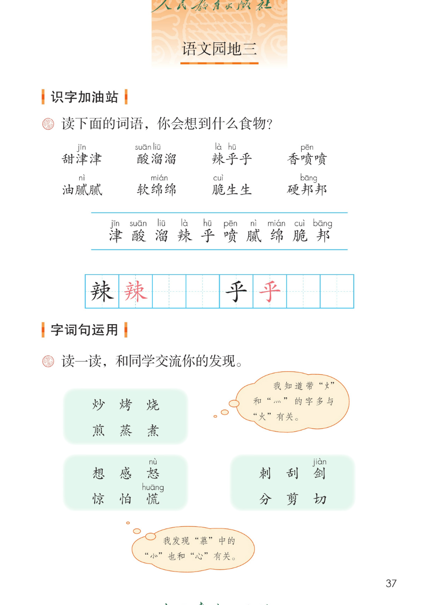
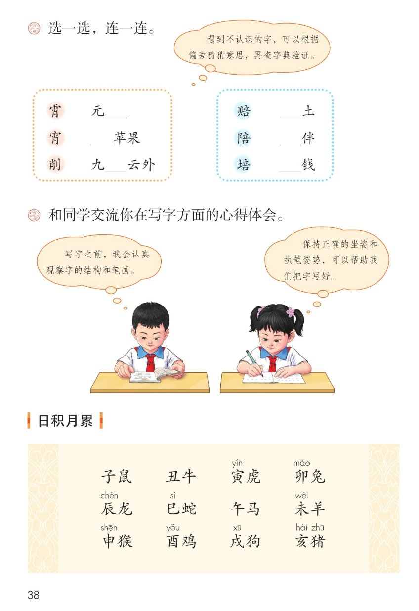
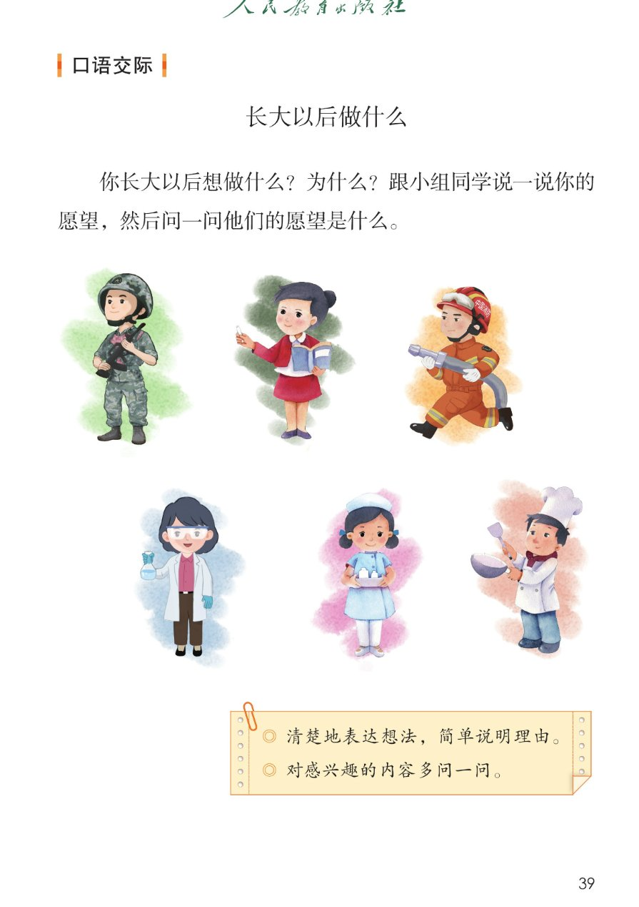
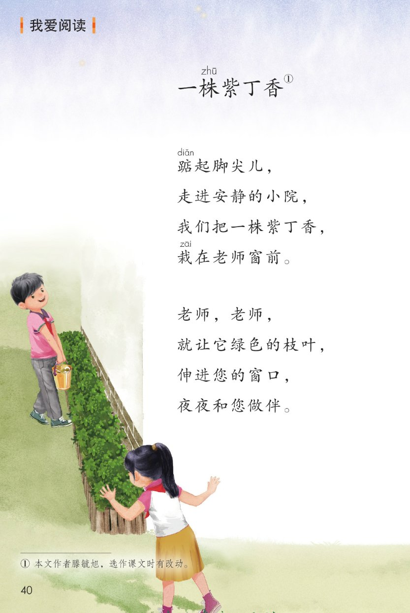
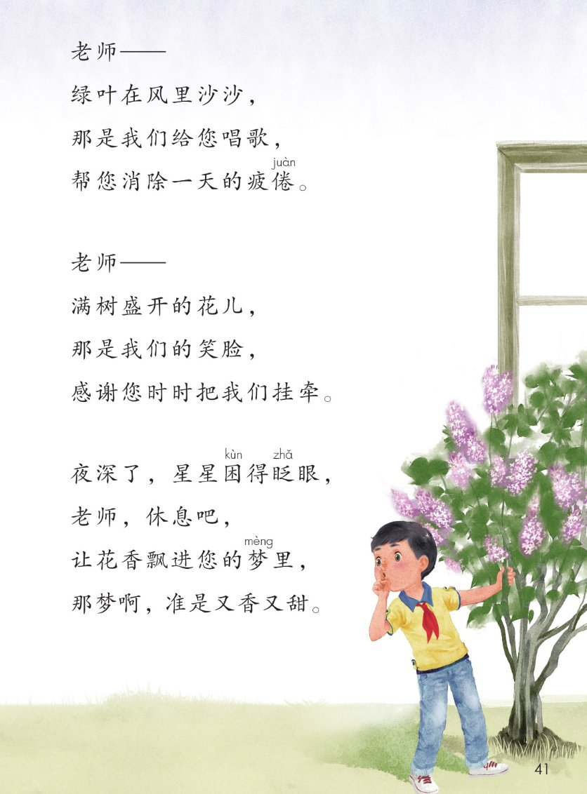

×
🔊 手机听不到声音怎么办？
① 先把手机
媒体音量调大 ，确认没开静音、没连蓝牙耳机；在微信里打开的，点右上角「⋯ → 用浏览器打开」。
② 还是没声音？到应用商店免费下载
Microsoft Edge 浏览器 （它自带朗读发声），用它打开本页面就能出声。
③ 换了 Edge 仍然没声音，说明这部手机的
硬件/系统不支持 网页朗读（多为老旧机型）；近几年买的新手机一般都能正常播放。
→ 打开声音自检
统编版 · 二年级下册 · 第三单元
第三单元 · 识字 · 中国人的生活
单元综合课件：语文园地三 · 口语交际 · 我爱阅读
ABB 词 8 个
会认 10 字
会写 2 字
生肖 12 词
闯关 8 题
这个单元学了什么： 四篇识字课文都在说中国人的生活——三字谣里的祖国、按时间过的节日、汉字里的古人智慧、餐桌上的美食。
语文园地三把本单元学到的味道词、偏旁归类、猜字方法、十二生肖、口语交际、读诗 收一收、用一用。点一下任一卡片或句子，就能听。
课本第 37 页
点词听读音，点解释听意思
题目（课本原文）： 读下面的词语，你会想到什么食物？
甜津jīn 津
甜得沁人 · 想到西瓜、甘蔗
「津」jīn
酸suān 溜liū 溜
酸味很重 · 想到酸梅、柠檬
「酸溜」suān liū
辣là 乎hū 乎
辣得发热 · 想到辣椒
「乎」hū
香喷pēn 喷
香气扑鼻 · 想到刚出锅的饭
「喷」pēn
软绵mián 绵
软软的 · 想到棉花糖
「绵」mián
脆cuì 生生
嘎嘣脆 · 想到黄瓜、萝卜
「脆」cuì
硬邦bāng 邦
硬得硌手 · 想到冻馒头
「邦」bāng
📌 每张卡第三行的「想到什么食物」是课件补的参考 ，课本只出词语和注音，你想到的食物答案不唯一 。
怎么认： 两条蓝线之间是 10 个要认的字；词里带拼音的那个字，就是园地里新要认的字。先读整词，再把单字挑出来认。
课本第 37 页两条蓝线之间那一行，按课本顺序
田字格：辣 乎（黑色是范字，红色是描红）
课本第 37~38 页
第 1 题（课本原文）： 读一读，和同学交流你的发现。
第 1 框
炒 烤 烧 煎 蒸 煮
带「火」「灬」，多与火有关
第 2 框
想 感 怒 惊 怕 恍
带「心」「忄」，多与心情有关
第 3 框
刺 刮 剑 分 剪 切
带「刂」「刀」，多与刀有关
课本气泡一（原话）： 我知道带"火"和"灬"的字多与"火"有关。
课本气泡二（原话）： 我发现"慕"中的"⺗"也和"心"有关。
📌 三框的部首归纳与气泡里 nù、huāng、jiàn 的注音照课本第 37 页 ；「带某偏旁的字多与某有关」是通用语文常识，供参考 。
课本第 38 页
先猜意思，再连线
题目（课本原文）： 选一选，连一连。
左框
霄 宵 削
元__ → 宵（元宵）
右框
赔 陪 培
__土 → 培（培土）
课本气泡（原话）： 遇到不认识的字，可以根据偏旁猜猜意思，再查字典验证。
📌 连线答案是课件补的参考 ：宵是宝盖头，元宵是正月十五吃的；削带立刀旁，用刀削苹果；霄带雨字头，指天空。培带土字旁，陪带左耳旁，赔带贝字旁（古时候贝就是钱）。以课本和字典为准。
课本第 38 页
题目（课本原文）： 和同学交流你在写字方面的心得体会。
可以这样说： 动笔前看结构 → 写的时候坐正握好笔 → 写完对照比一比 。
课本第 38 页
点一个词读一个词
日积月累 · 十二生肖
子鼠 丑牛 寅虎 卯兔 · 辰龙 巳蛇 午马 未羊 · 申猴 酉鸡 戌狗 亥猪
十二生肖是什么： 鼠、牛、虎、兔、龙、蛇、马、羊、猴、鸡、狗、猪十二种动物轮着记年；出生那年对应哪种动物，属相 就是它。问问家里人：你的属相是什么？
📌 课本只给「寅 yín 」「卯 mǎo 」「辰 chén 」「巳 sì 」「未 wèi 」「申 shēn 」「酉 yǒu 」「戌 xū 」「亥 hài 」「猪 zhū 」注了音；其余字不另加注音。时辰说明为课件补注，供参考 。
🎯 背诵闯关（三步）
🔊 十二个词连起来读
第一步： 跟读，一个词一个词跟着读。第二步： 看提示背，只看每个词的第一个字。第三步： 合上书背一遍，再对照课本。
课本第 39 页
先想清楚，再说给小组听
题目（课本原文）： 你长大以后想做什么？为什么？跟小组同学说一说你的愿望，然后问一问他们的愿望是什么。
🖼 课本配图： 第 39 页画了六位不同职业的人（解放军、教师、消防员、医生、护士、厨师——图片人物由课件描述，供参考 ）。
照课本便签的两条要求整理
1
说清想做什么
一句话说清愿望，声音响亮。
「我长大以后想当一名老师。」
2
简单说明理由
照便签要求：清楚地表达想法，简单说明理由。
「因为老师能教很多小朋友认字读书。」
3
问一问别人
照便签要求：对感兴趣的内容多问一问。
「你想做什么？为什么喜欢它？」
📋 课本便签（照录）： ○ 清楚地表达想法，简单说明理由。
说清了想做什么 ★ ★ ★
简单说明了理由 ★ ★ ★
声音清楚，大家都听见了 ★ ★ ★
问了别人的愿望 ★ ★ ★
👆 说完给自己打个星：三颗星是很棒，两颗星是还要加油。
株zhū 紫丁香》①
课本第 40~41 页
点一节读一节，注音按课本随文照录
读前想一想： 孩子们把紫丁香栽在老师窗前 ，想让绿叶帮老师唱歌 、花香飘进老师的梦里 。读一读：每一节想对老师说什么？
诗里没有直接说「老师辛苦了」，感情却藏在每个字里，藏在哪儿？
💡 感情藏在三处： 绿叶沙沙是唱歌 、满树花儿是笑脸 、花香入梦是陪伴 ——不说话的紫丁香，替孩子们日日夜夜陪着老师。
朗读小提示： 每节开头的「老师」读得轻、读得亲；「老师」后面的破折号 把声音拉长一点，像在轻轻呼唤。
词语积累（取自诗行）
踮起脚尖儿 ——轻轻抬起脚，怕吵到人疲倦 ——累了、没有力气了挂牵 ——惦记、放心不下又香又甜 ——又香又甜的梦
和本单元连起来看
识字 2 里七夕牛郎织女、中秋团圆，讲的是家人 的牵挂。
这首诗讲的是学生和老师 之间的牵挂。
牵挂的方式不同，心意一样：都盼着对方好。
单元串起来： 歌谣里的山河 → 节日里的团圆 → 汉字里的智慧 → 饭菜里的烟火气 → 诗句里的牵挂 ——中国人的生活都藏在里面。
点选项就判对错，答完自动算分
已经答 0 题，答对 0 题。
点图放大

第 37 页 · 识字加油站 · 字词句运用

第 38 页 · 选一选连一连 · 日积月累

第 39 页 · 口语交际 · 长大以后做什么

第 40 页 · 我爱阅读 · 一株紫丁香

第 41 页 · 一株紫丁香（后半）